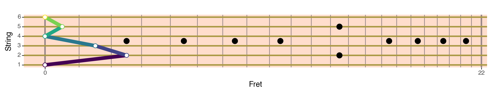

plotnine.scales.scale_x_continuous¶
- class plotnine.scales.scale_x_continuous(**kwargs)[source]¶
Continuous x position
- Parameters:
- breaksarray_like or
callable(), optional Major break points. Alternatively, a callable that takes a tuple of limits and returns a list of breaks. Default is to automatically calculate the breaks.
- expand
tuple, optional Multiplicative and additive expansion constants that determine how the scale is expanded. If specified must be of length 2 or 4. Specifically the values are in this order:
(mul, add) (mul_low, add_low, mul_high, add_high)
For example,
(0, 0)- Do not expand.(0, 1)- Expand lower and upper limits by 1 unit.(1, 0)- Expand lower and upper limits by 100%.(0, 0, 0, 0)- Do not expand, as(0, 0).(0, 0, 0, 1)- Expand upper limit by 1 unit.(0, 1, 0.1, 0)- Expand lower limit by 1 unit and upper limit by 10%.(0, 0, 0.1, 2)- Expand upper limit by 10% plus 2 units.
If not specified, suitable defaults are chosen.
- name
str, optional Name used as the label of the scale. This is what shows up as the axis label or legend title. Suitable defaults are chosen depending on the type of scale.
- labels
listorcallable(), optional List of
str. Labels at the breaks. Alternatively, a callable that takes an array_like of break points as input and returns a list of strings.- limitsarray_like, optional
Limits of the scale. Most commonly, these are the min & max values for the scales. For scales that deal with categoricals, these may be a subset or superset of the categories.
- na_valuescalar
What value to assign to missing values. Default is to assign
np.nan.- palette
callable(), optional Function to map data points onto the scale. Most scales define their own palettes.
- aesthetics
list, optional list of
str. Aesthetics covered by the scale. These are defined by each scale and the user should probably not change them. Have fun.- trans
str|function Name of a trans function or a trans function. See
mizani.transformsfor possible options.- oob
function Function to deal with out of bounds (limits) data points. Default is to turn them into
np.nan, which then get dropped.- minor_breakslist-like or
intorcallable()orNone If a list-like, it is the minor breaks points. If an integer, it is the number of minor breaks between any set of major breaks. If a function, it should have the signature
func(limits)and return a list-like of consisting of the minor break points. IfNone, no minor breaks are calculated. The default is to automatically calculate them.- rescaler
function, optional Function to rescale data points so that they can be handled by the palette. Default is to rescale them onto the [0, 1] range. Scales that inherit from this class may have another default.
- breaksarray_like or
Examples¶
[1]:
import numpy as np
import pandas as pd
from plotnine import (
ggplot,
aes,
geom_point,
geom_path,
scale_x_continuous,
scale_y_continuous,
guides,
theme,
element_line,
element_rect
)
from mizani.transforms import trans
Guitar Neck¶
Using a transformed x-axis to visualise guitar chords
The x-axis is transformed to resemble the narrowing width of frets on a 25.5 inch Strat. To do that we create custom transformation.
The key parts of any transform object are the transform and inverse functions.
[2]:
class frets_trans(trans):
"""
Frets Transformation
"""
number_of_frets = 23 # Including fret 0
domain = (0, number_of_frets-1)
@staticmethod
def transform(x):
x = np.asarray(x)
return 25.5 - (25.5 / (2 ** (x/12)))
@staticmethod
def inverse(x):
x = np.asarray(x)
return 12 * np.log2(25.5/(25.5-x))
@classmethod
def breaks_(cls, limits):
# Fixed major breaks
return cls.domain
@classmethod
def minor_breaks(cls, major, limits):
# The major breaks as passed to this method are in transformed space.
# The minor breaks are calculated in data space to reveal the
# non-linearity of the scale.
_major = cls.inverse(major)
minor = cls.transform(np.linspace(*_major, cls.number_of_frets))
return minor
The above transform is different from most in that, breaks and minor breaks do not change. This is common of very specialized scales. It can also be a key requirement when creating graphics for demontration purposes.
Some chord Data
[3]:
# Notes: the 0 fret is an open strum, all other frets are played half-way between fret bars.
# The strings are 1:low E, 2: A, 3: D, 4: G, 5: B, 6: E
c_chord = pd.DataFrame({
'Fret': [0, 2.5, 1.5, 0, 0.5, 0],
'String': [1, 2, 3, 4, 5, 6]
})
# Sequence based on the number of notes in the chord
c_chord['Sequence'] = list(range(1, 1+len(c_chord['Fret'])))
# Standard markings for a Stratocaster
markings = pd.DataFrame({
'Fret': [2.5, 4.5, 6.5, 8.5, 11.5, 11.5, 14.5, 16.5, 18.5, 20.5],
'String': [3.5, 3.5, 3.5, 3.5, 2, 5, 3.5, 3.5, 3.5, 3.5]
})
Visualizing the chord
[4]:
# Look and feel of the graphic
neck_color = '#FFDDCC'
fret_color = '#998888'
string_color = '#AA9944'
neck_theme = theme(
figure_size=(10, 2),
panel_background=element_rect(fill=neck_color),
panel_grid_major_y=element_line(color=string_color, size=2.2),
panel_grid_major_x=element_line(color=fret_color, size=2.2),
panel_grid_minor_x=element_line(color=fret_color, size=1)
)
# Gallery Plot
(ggplot(c_chord, aes('Fret', 'String'))
+ geom_path(aes(color='Sequence'), size=3)
+ geom_point(aes(color='Sequence'), fill='#FFFFFF', size=3)
+ geom_point(data=markings, fill='#000000', size=4)
+ scale_x_continuous(trans=frets_trans)
+ scale_y_continuous(breaks=range(0, 7), minor_breaks=[])
+ guides(color=False)
+ neck_theme
)

[4]:
<Figure Size: (1000 x 200)>
Credit: This example was motivated by Jonathan Vitale who wanted to create graphics for a guitar scale trainer.